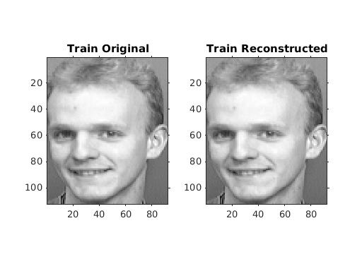
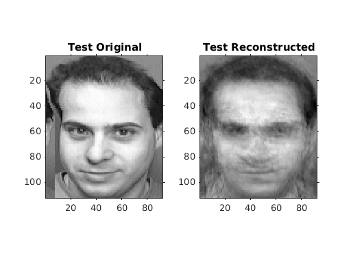
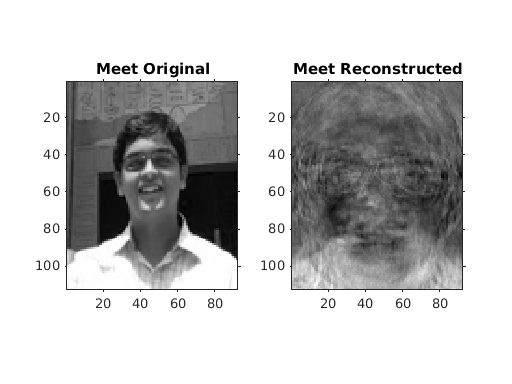
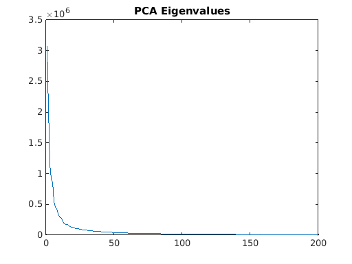
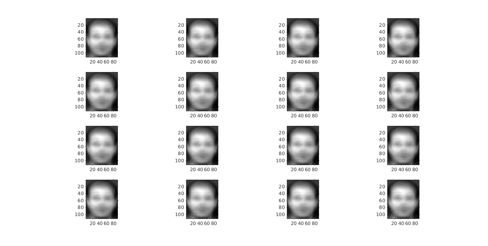
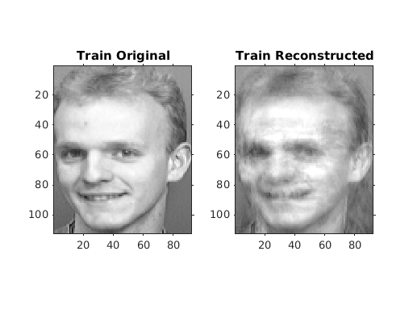
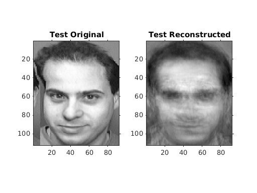
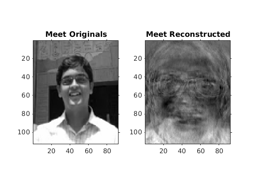
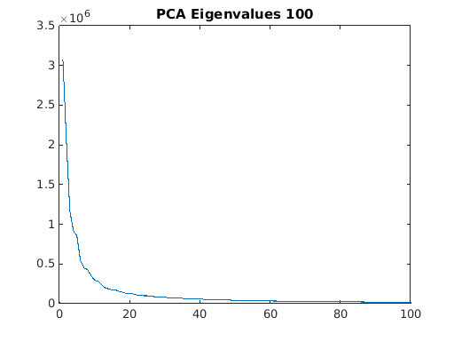

EE 779 : PCA Assignment
Meet Pragnesh Shah, 13D070003
Contents
% I did the same assignment in CS663, for a more detailed explanation of % the optimization used and how reconstruction varies with number of components % please visit : http://meetshah1995.github.io/CS-663/assig-4/3/report/myMainScript.html % % I have made some changes in the pca_orl and orl data loader code to % be inline with my directory structure, that will however not make any difference % in the performance / reports.
PCA with k = 200
facerecog1_meet % % MSE in training images database is significantly low when compared to the MSE of % test image and myImg. This is due to the fact that the eigenspace defined by the % training images is specific to itself and any arbitrary image when reconstructed % with the principal components of these space will lead to large MSE in images. % % However we notice that since the database contains images of faces, that have very % generic spatial features and illumination conditions, some generality is still captured % by the eigenspace. Thus any image (i.e test image) with similar spatial features (face in the same % location and same size) can be reconstructed from this PCs with MSE in acceptable bounds. % % But when a completely arbitrary image like myImg, whose features are considerably different % from the original database is reconstructed using the PCs, the MSE is very large as can be observed. % % We can also see from the plots of eigenfaces that the PCA has generalized well for higher eigenvalues, % and the eigenfaces resemble actual faces, the resemblance however reduces for lower eigenvalues % (lesser principal components).
Reading in the images...
[1/40][2/40][3/40][4/40][5/40][6/40][7/40][8/40][9/40][10/40][11/40][12/40][13/40][14/40][15/40][16/40][17/40][18/40][19/40][20/40][21/40][22/40][23/40][24/40][25/40][26/40][27/40][28/40][29/40][30/40][31/40][32/40][33/40][34/40][35/40][36/40][37/40][38/40][39/40][40/40]
Zero mean
PCA
Normalising
Creating lower dimensional subspace
Projecting all images onto a new lower dimensional subspace
Reading in the images...
[1/40][2/40][3/40][4/40][5/40][6/40][7/40][8/40][9/40][10/40][11/40][12/40][13/40][14/40][15/40][16/40][17/40][18/40][19/40][20/40][21/40][22/40][23/40][24/40][25/40][26/40][27/40][28/40][29/40][30/40][31/40][32/40][33/40][34/40][35/40][36/40][37/40][38/40][39/40][40/40]
trainMSE =
0.1276
testMSE =
297.7861
myImgMSE =
1.5830e+03
     PCA with k = 100
facerecog2_meet % % Other error charecteristics remain same, but we can observe that the train MSE has increased, but the test and myImg MSE % is still almost similar as in case of k =200. This is very intuitive from the fact that, since test and myImg dint belong % to the PC in the first place, the reconstruction was bound to fail. One thing however to note here is that the percentage % change in test is more than in myIMG, because test image, though not belonging to the database, had very similar % characteristics to the train database (which were captured by the principal components). Now as we reduced the PCs, % the test reconstruction also deteriorated.
Reading in the images... [1/40][2/40][3/40][4/40][5/40][6/40][7/40][8/40][9/40][10/40][11/40][12/40][13/40][14/40][15/40][16/40][17/40][18/40][19/40][20/40][21/40][22/40][23/40][24/40][25/40][26/40][27/40][28/40][29/40][30/40][31/40][32/40][33/40][34/40][35/40][36/40][37/40][38/40][39/40][40/40] Zero mean PCA Normalising Creating lower dimensional subspace Projecting all images onto a new lower dimensional subspace Reading in the images... [1/40][2/40][3/40][4/40][5/40][6/40][7/40][8/40][9/40][10/40][11/40][12/40][13/40][14/40][15/40][16/40][17/40][18/40][19/40][20/40][21/40][22/40][23/40][24/40][25/40][26/40][27/40][28/40][29/40][30/40][31/40][32/40][33/40][34/40][35/40][36/40][37/40][38/40][39/40][40/40] trainMSE = 124.3000 testMSE = 343.9432 myImgMSE = 1.7987e+03   
My Implementation
The code for the PCA method discussed in the class cannot be implemented given the memory constraints as it forms a matrix of almost 10k * 10k, and then tries to calculate the evs for it, which is very time consuming and not possible on a personal computer.
This however can be avoided using a smart trick that the `pca_orl.m` code uses. They calculate the eigenvectors only for innerp X'X instead of outerp XX', thus reducing the eigenspace. X'X is only 10k * n_components and the eigenvectors for these can pe computed in the given time and memory constraints.
The reason for this is very nice, we know that the rank of X is at max 200 thus, all singular values will anyways be zero after the first 200. So we can safely ignore computing the eigenvectors for them.